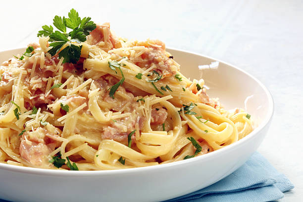

Carbonara

Description
The best carbonara recipe, inspired by best french cookers!
Delicious and easy to make
Ingredients
- Guanciale
- Pasta
- Parmigiano
- Pepper
- Eggs
- Salt
Steps
- Cook the pasta with 1 liter of water and 10 grams of salt per 100 grams.
- While cooking the pasta, fry the guanciale in a pan
- Before the pasta is fully cooked, drain them and reserve. Keep some cooking water and add it to the pan
- Add an egg yolk to the pan, then the pasta and stir well
- Finally, add some gratted parmigiano and a lot of pepper, and enjoy!